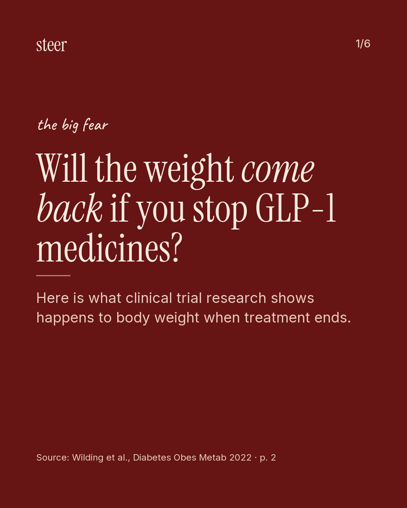
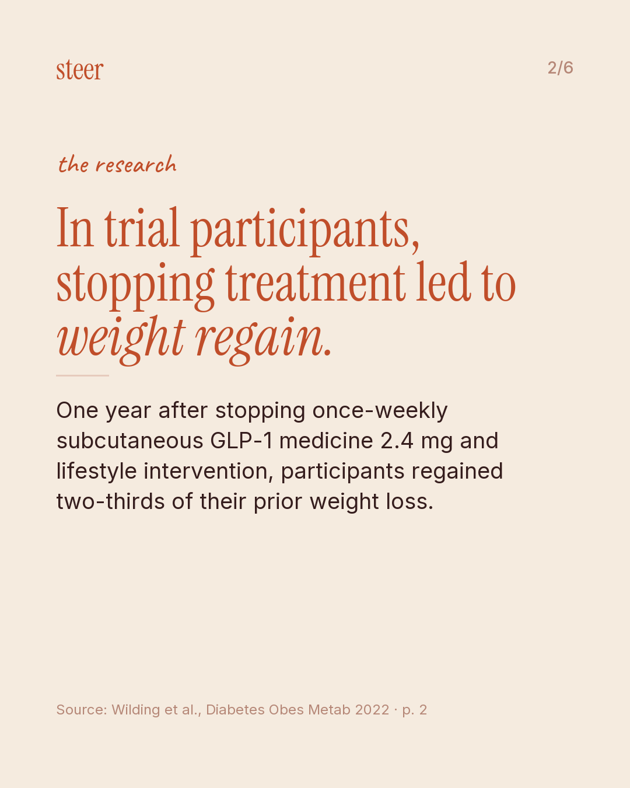
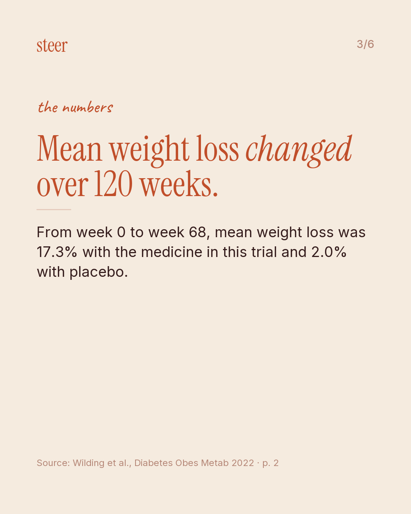
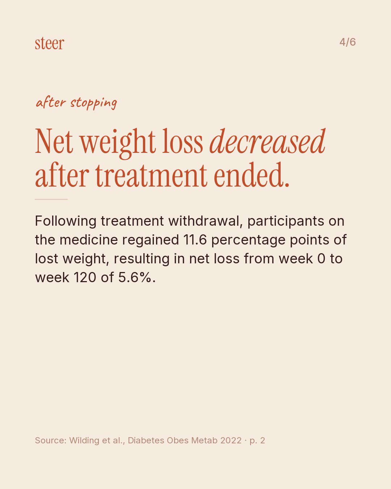
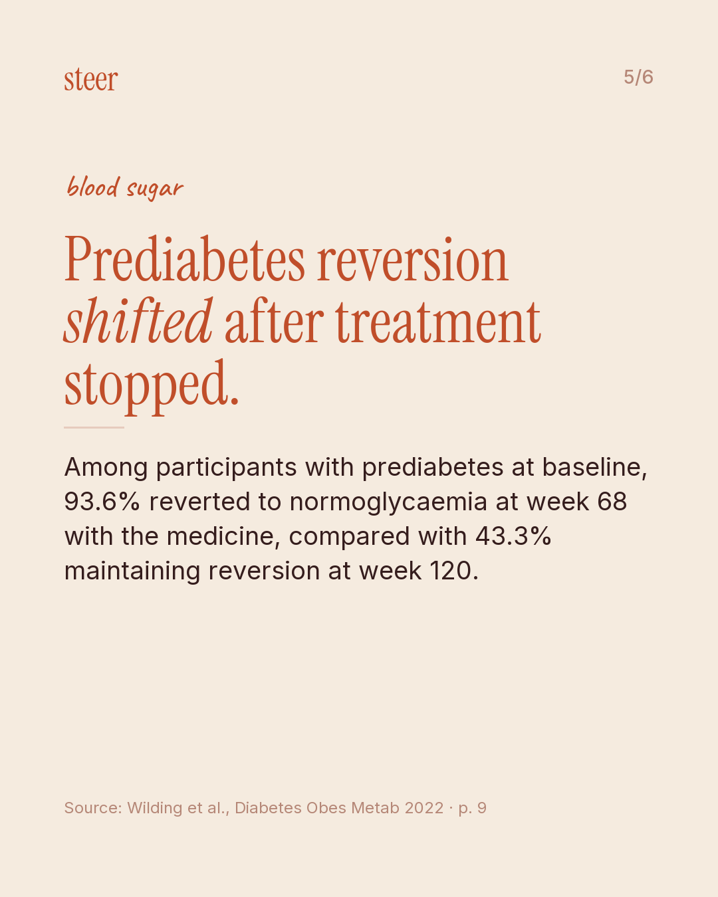
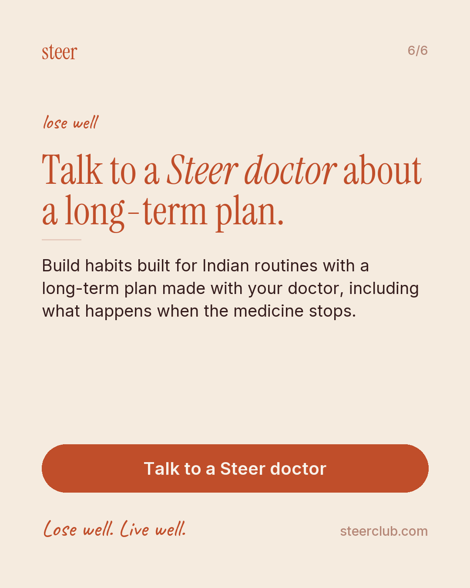
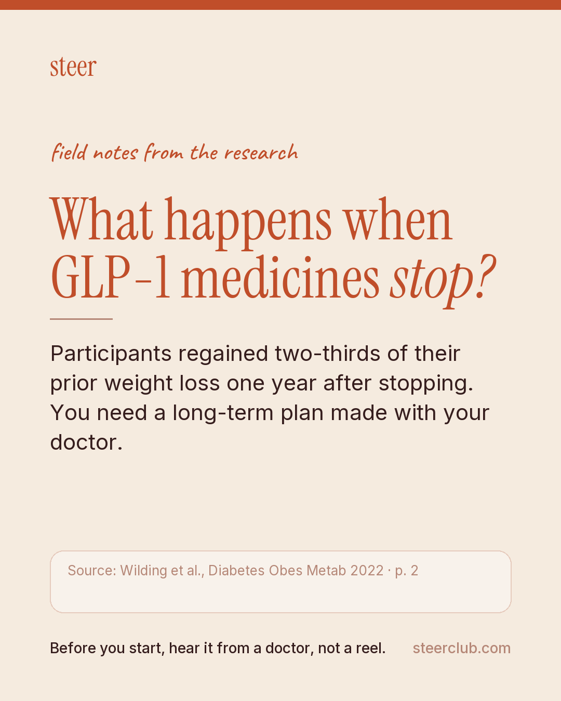
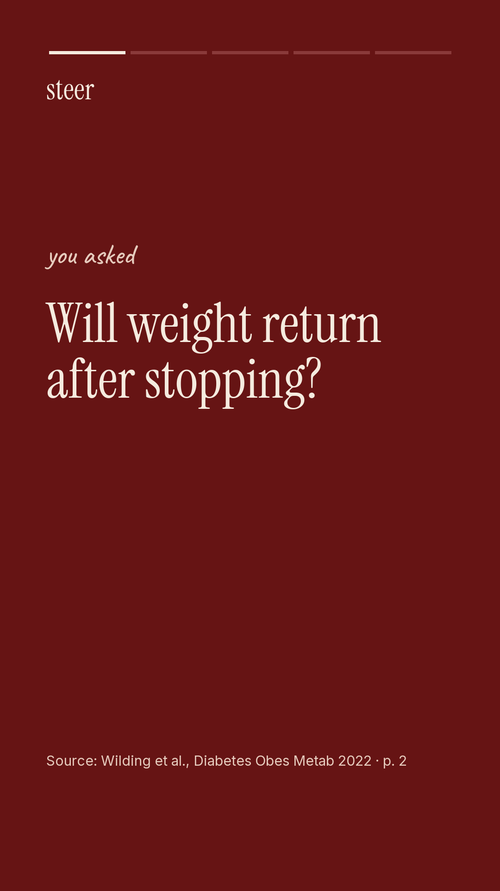
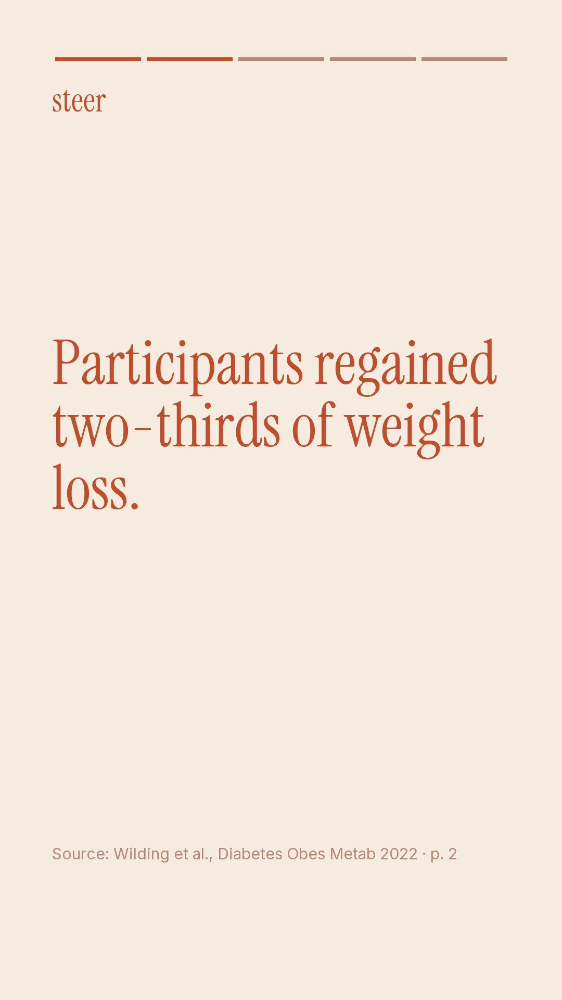
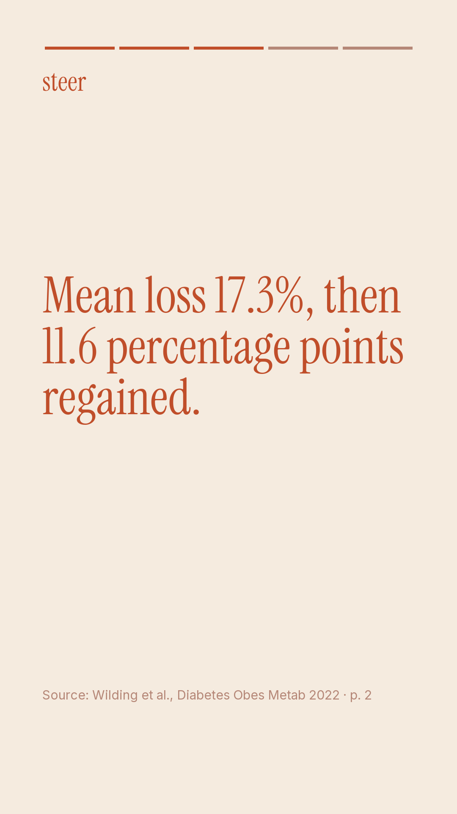
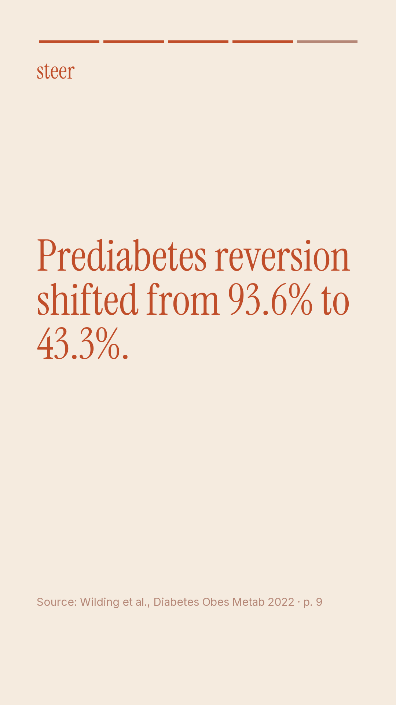
#MetabolicHealth #WeightRegain #GLP1Research #DoctorLedCare #SteerClub #IndianHealth #Prediabetes #HabitsNotQuickFixes #LoseWellLiveWell
| id | finding | verbatim quote | where |
|---|---|---|---|
| c1 | From week 0 to week 68, mean weight loss was 17.3% (SD: 9.3%) with semaglutide and 2.0% (SD: 6.1%) with placebo; following treatment withdrawal, semaglutide and placebo participants regained 11.6 (SD: 7.7) and 1.9 (SD: 4.8) percentage points of lost weight, respectively, by week 120, resulting in net losses from week 0 to week 120 of 5.6% (SD: 8.9%) with semaglutide and 0.1% (SD: 5.8%) with placebo. | From week 0 to week 68, mean weight loss was 17.3% (SD: 9.3%) with semaglutide and 2.0% (SD: 6.1%) with placebo. Following treatment withdrawal, semaglutide and placebo participants regained 11.6 (SD: 7.7) and 1.9 (SD: 4.8) percentage points of lost weight, respectively, by week 120, resulting in net losses of 5.6% (SD: 8.9%) and 0.1% (SD: 5.8%), respectively, from week 0 to week 120. | p. 2 |
| c2 | One year after stopping once-weekly subcutaneous semaglutide 2.4 mg and lifestyle intervention, participants regained two-thirds of their prior weight loss and experienced similar changes in cardiometabolic factors. | One year after withdrawal of once-weekly subcutaneous semaglutide 2.4 mg and lifestyle intervention, participants regained two-thirds of their prior weight loss, with similar changes in cardiometabolic variables. | p. 2 |
| c3 | In the semaglutide arm, participants with week 0 to week 68 weight losses of < 5%, ≥ 5%-< 10%, ≥ 10%-< 15%, ≥ 15%-< 20%, and ≥ 20% had net weight changes from week 0 to week 120 of 4.2% (SD: 6.2%), –0.7% (SD: 5.9%), –1.8% (SD: 5.0%), –5.5% (SD: 7.2%), and –12.1% (SD: 8.9%), respectively. | Participants in the semaglutide arm with weight losses (i.e. < 5%, ≥ 5%-< 10%, ≥ 10%-< 15%, ≥ 15%-< 20% and ≥ 20%) from week 0 to week 68 had net weight changes from week 0 to week 120 of 4.2% (SD: 6.2%), –0.7% (SD: 5.9%), –1.8% (SD: 5.0%), –5.5% (SD: 7.2%) and –12.1% (SD: 8.9%), respectively. | p. 8 |
| c4 | Among participants not using any obesity pharmacotherapy during the extension, mean weight changes from week 0 to week 120 were –5.6% (SD: 8.9%) in the semaglutide group and –0.3% (SD: 5.3%) in the placebo group. | Among the subgroup not using obesity pharmacotherapy, mean changes in body weight from week 0 to week 120 were –5.6% (SD: 8.9%) and –0.3% (SD: 5.3%) in the semaglutide and placebo arms, respectively. | p. 8 |
| c5 | Among participants with prediabetes at baseline, 93.6% reverted to normoglycaemia at week 68 with semaglutide compared with 41.5% with placebo. | Among participants with prediabetes at baseline, numerically more participants reverted to normoglycaemia at week 68 with semaglutide than placebo (93.6% vs. 41.5%; Figure 3). | p. 9 |
| c6 | At week 120, 43.3% of baseline prediabetes participants in the semaglutide arm maintained reversion to normoglycaemia compared to 34.0% in the placebo arm. | Although the deterioration was larger in the semaglutide arm, a relative improvement was maintained versus the placebo arm at week 120, with reversion to normoglycaemia in 43.3% versus 34.0% of participants with baseline prediabetes in the semaglutide and placebo arms, respectively. | p. 9 |
| c7 | The lifestyle intervention comprised counselling every 4 weeks regarding diet (a 500 kcal daily deficit relative to total estimated energy expenditure at randomization) and physical activity (150 minutes per week). | The lifestyle intervention consisted of counselling every 4 weeks on diet (500 kcal deficit per day relative to total estimated energy expenditure at randomization) and physical activity (150 minutes per week). | p. 3 |
| c8 | The main limitations of the extension study included its relatively small sample size compared to the main STEP 1 trial population and selecting trial sites based on highest main phase recruitment, which could cause selection bias. | The key limitations of the extension were the relatively small sample size compared with the main STEP 1 trial population and the selection of sites based on those with the highest recruitment in the STEP 1 main phase, which could introduce an element of selection bias. | p. 10 |
| c9 | All extension phase analyses were exploratory, and no formal statistical significance testing was conducted. | In addition, all analyses were exploratory and thus no formal tests of statistical significance were performed. | p. 10 |
| proposed claim | why it was rejected |
|---|---|
| At week 120 (52 weeks off-treatment), a weight loss of 5% or higher from baseline was observed in 48.2% of participants (95 of 197) in the semaglutide arm compared with 22.6% (21 of 93) in the placebo arm. | numbers not in the quote: 52 |
| After treatment was stopped, mean systolic and diastolic blood pressure increased in both groups and returned to baseline levels by week 120. | quote not found in the paper (best match 0.73) |